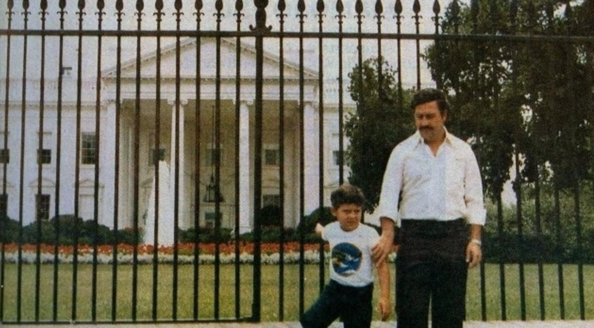

Pablo Escobar junto a su hijo, Juan Pablo, delante de la Casa Blanca
Pablo Escobar fue uno de los narcotraficantes más notorios de la historia. Nacido en Rionegro, Colombia, en 1949, Escobar comenzó su carrera criminal en el contrabando de cigarrillos y electrodomésticos. En la década de 1970, se involucró en el tráfico de cocaína, estableciendo el Cartel de Medellín junto con otros narcotraficantes.